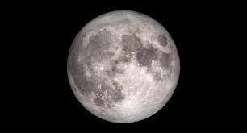
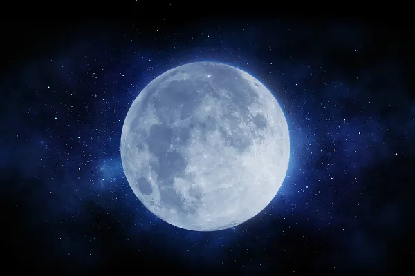

lua, minha melhor ouvinte

melhor astro
Tenho fases, como a lua.
Fases de andar escondida,
fases de vir para a rua…
Perdição da minha vida!
Perdição da vida minha!
Tenho fases de ser tua,
tenho outras de ser sozinha.
Fases que vão e vêm,
no secreto calendário
que um astrólogo arbitrário
inventou para meu uso.
E roda a melancolia
seu interminável fuso!
Não me encontro com ninguém
(tenho fases como a lua…)
No dia de alguém ser meu
não é dia de eu ser sua…
E, quando chega esse dia,
o outro desapareceu…
lua